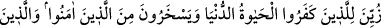
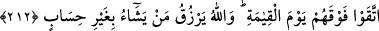

değiştirirse Allah onu şiddetli bir azâba çarptırır. Zira O, nimeti tebdîl ve tağyîr edene
hem dünyâda, hem de âhırette şiddetli cezâ verir. Nitekim tağyîr-i nimet eden
yahûdîlerden Kurayza oğulları öldürülmekle, Nadir oğulları da sürülmekle dünyâda
cezâlandırılmıştır. Âhırette de şiddetli azâba dûçâr olacaklardır.
İbnu’t-Temcid der ki: Nimeti cehâletle, bilmeden değiştirmek bir suçtur. Bilerek
değiştirmek ise daha büyük bir suçtur. Bu sebeple ahkâm-ı ilâhîyi bilip de gereğini
yerine getirmeyen âlimlere yapılan tehdîd, câhillere yapılandan daha şiddetlidir. Zira
cehâlet -ilâhî ahkâm konusunda mazeret kabûl edilmese de- bazen mazeret olabilir.
212. Kâfir olanlar için dünyâ hayatı câzib kılındı. (Bu yüzden) onlar, îmân edenler
ile alay ederler. Oysa ki, (îmân edip) inkârdan sakınanlar kıyâmet gününde onların
üstündedir. Allah dilediğine hesapsız rızık verir.
Dünyâ hayatı kâfirlerin gözünde güzel göründü de muhabbeti kalblerine içirildi. Öyle
ki onun için canhıraş çalıştılar. Onun uğruna her şeyden yüz çevirdiler. Dünyâ hayatının
tezyîni, yaratılış cihetinden Allah’a âiddir. Zira her şeyi yaratan O’dur. Süslü gösterilme
işi ise şeytandan ve hayvânî kuvvetlerdendir. Dünyâda var olan behîmî ve şehevî her
şey geçici olarak süslenmiş, güzel gösterilmiştir.
Dünyâ hayatının geçici süsüne aldanan bu kâfirler, Abdullah b. Mes’ûd, Ammar b.
Yâsir, Suheyb Rûmî, Hubeyb ve Bilâl Habeşî gibi Rasûlullah’a îmân edip dünyaya
iltifat etmeyen mü’minlerden bir kısmını ve bâ-husûs fukarâ-yı sâbirînle alay ederler.
Onları aşağılayarak derler ki: Dünyanın lezzetlerini terkedip kendilerine eziyet
ediyorlar. İbâdetlerle kendilerini yoruyor ve rahatlarını bozuyorlar. Dünyanın
güzelliklerinden yararlanamıyorlar.
Bu kâfirlerin mü’minlere karşı ilk tavırları hafife alma ve alay şeklinde oluyor.
Halbuki ehl-i takvâ olan; yâni Allah’a itâat edip fakrı tercih eden mü’minler, kıyâmet
gününde o müşriklerin üstündedir. Zira onlar esfel-i sâfilînde iken bunlar âlâ-yı
iliyyîndedirler. Buna göre “müttakîlerin müşriklerin üzerinde olması”, hakîkî
mânâsındadır. Şöyle de denilebilir: Mü’minler ilâhî ihsan ve ikrâmın zirve noktasında
iken, müşrikler zillet ve alçaklığın son noktasındadırlar. Buna göre “müttakîlerin
müşriklerin üstünde olma” ifâdesi mecâzî bir ifâde olmuş oluyor.
Burada mü’minlerin takvâ vasfıyla zikredilmesi şunu anlatmak içindir: Onların
dünyâdan yüz çevirmeleri, takvâlarından dolayıdır. Çünkü dünyâ, Cenâb-ı Hakk’a tam
bir şekilde yönelmelerine engeldir. Buradan anlaşılan diğer bir mânâ da: Allah katında
mertebesi yücelen ancak, müttakî mü’mindir.
Allah gerek dünyâda ve gerek âhırette dilediğine hesapsız rızık verir. Zira Hak Teâlâ